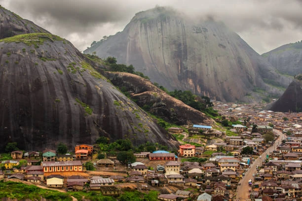

About Nigeria
Nigeria is a country in West Africa known for its diverse cultures, languages, food, music, and natural landscapes. It is home to many different ethnic groups and has a rich history and cultural heritage.
Nigeria's largest city is Lagos, while Abuja is the capital. The country has tropical forests, savannas, rivers, beaches, and busy urban centers.
Weather

Temperature: 28 °C
Conditions: Partly Cloudy
Wind: 12 km/h
Wind Chill: N/A
Interesting Facts
- Nigeria is located in West Africa.
- The capital city is Abuja.
- Lagos is one of Nigeria's largest cities.
- English is the official language.
- Nigeria has hundreds of languages and ethnic groups.
- The country has a coastline along the Gulf of Guinea.